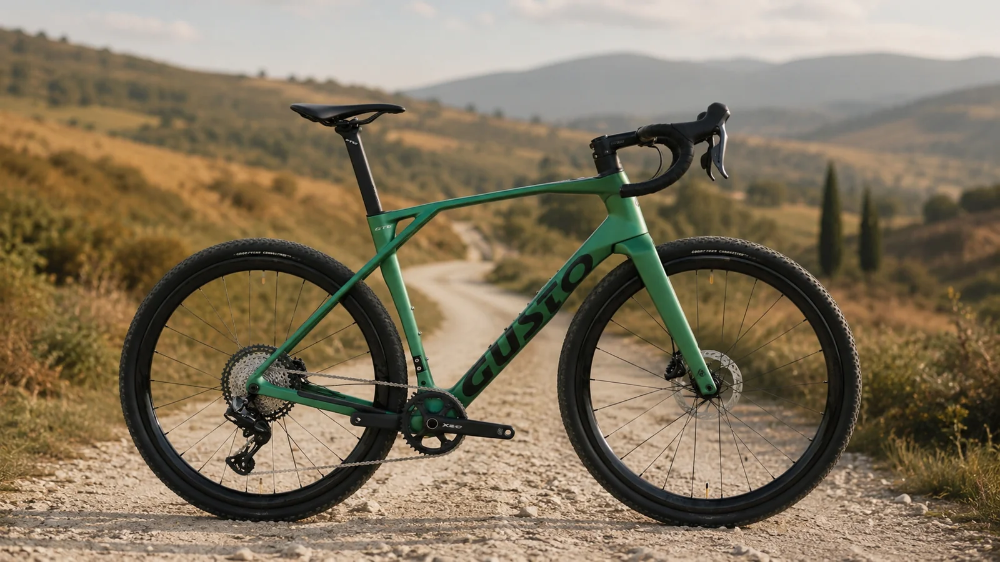
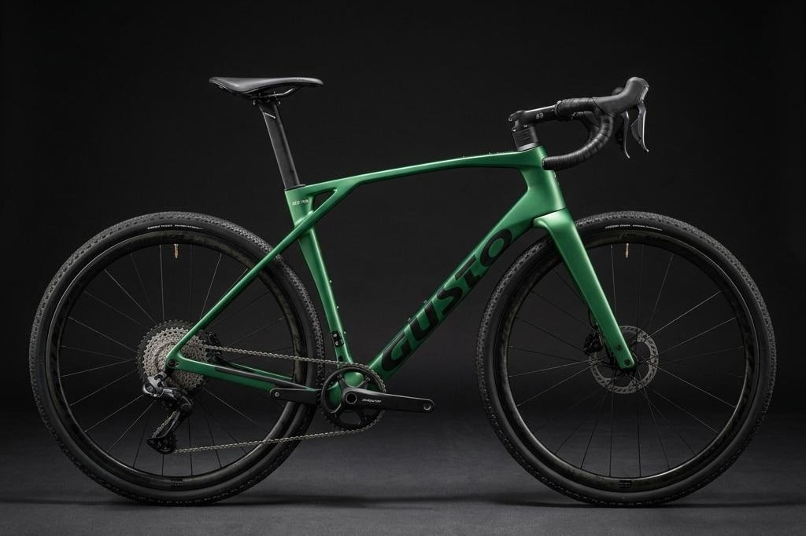
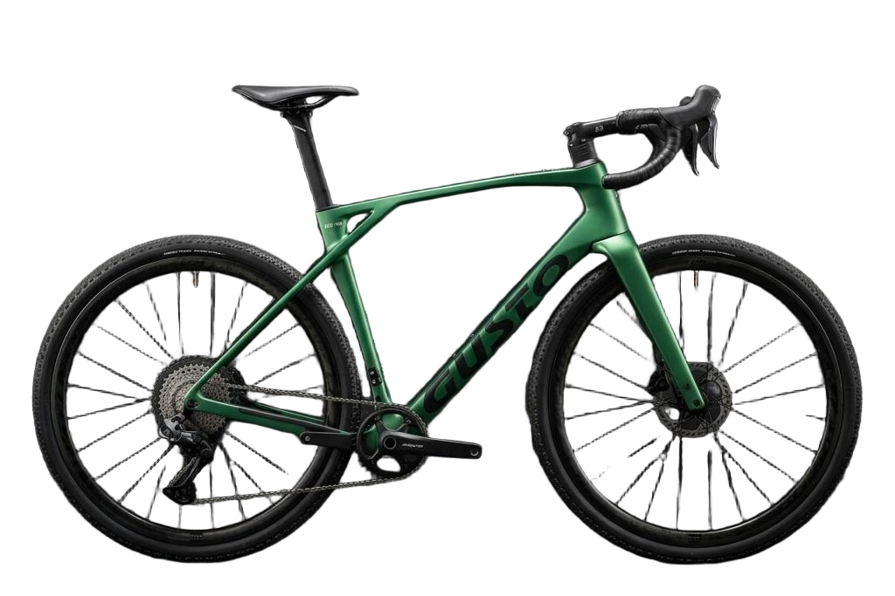
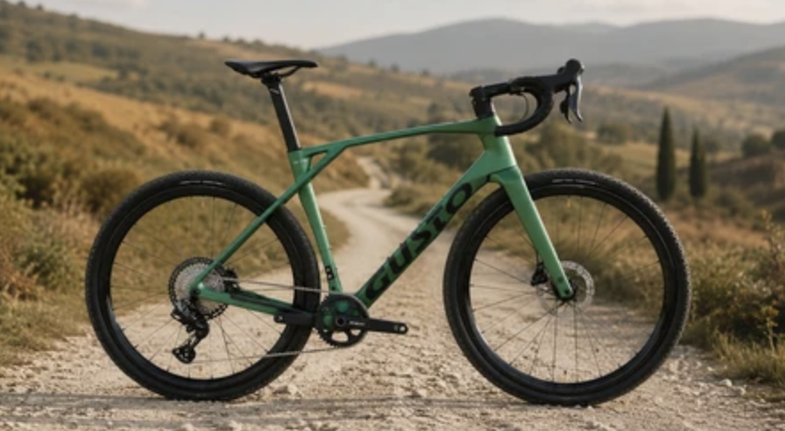

GRX Di2.
Precise electronic shifting built for changing surfaces.

Why GTG
A fast carbon gravel chassis with Shimano GRX Di2 across three build levels. Stable on broken roads, direct under power and ready for the quieter reward of going further.



Precise electronic shifting built for changing surfaces.
2x, GRX 700 Di2 and GRX 800 Di2 options.
Fast across hardpack, broken roads and long routes.
Controlled braking for variable British conditions.
Specification
Geometry
Measurements in millimetres unless specified. Final UK fit should be confirmed by an authorised dealer.
Scroll horizontally to compare every size.
The Gusto network
Visit an authorised Gusto dealer for fitting, sizing and availability.
Find a dealer ↗